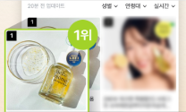
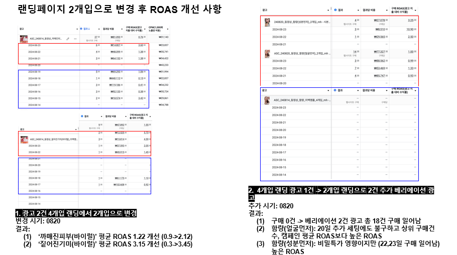

입점 프로젝트
올리브영 입점 프로젝트
데이터 기반 제안서, 팀 협업, SNS 이벤트 기획
재구매율, 리뷰 데이터 기반으로 브랜드 경쟁력 설득 및 입점 성공. SNS 이벤트로 구매 인증 활성화, 카테고리 1위 및 매출 1억 달성.
뷰티 브랜드 올리브영 입점 프로젝트 및 신제품 프로모션 광고 성과 개선
1. 브랜드의 오프라인 유통 확장을 위해 올리브영 입점이 필요한 상황에서 입점 프로젝트를 맡아 제안서와 마케팅을 기획하였습니다.
2. 신제품 프로모션 광고의 초기 효율이 낮아 광고 성과 개선이 필요한 상황에서 랜딩 구조의 문제점을 발견해 전환율을 높였습니다.
1. 올리브영 입점 및 매출 달성 전략:
(1) 재구매율 및 리뷰 데이터를 기반으로 브랜드 경쟁력을 설득하는 제안 전략 수립
(2) 시장 트렌드 분석을 통해 제품 포지셔닝 및 입점 방향 설정
2. 메타 광고 개선 전략:
(1) 광고 성과 저하 원인을 크리에이티브가 아닌 랜딩 구조에서 찾는 가설 설정
(2) 제품별 전환율 데이터를 기반으로 고전환 제품 중심 구조로 랜딩페이지 및 광고 구조 수정
제안서 작성 및 입점 프로세스 진행 / 제품 개발팀 및 디자인팀과 협업하여 입점 전략 실행
입점 이후 SNS 구매 인증 이벤트 및 자사를 프로모션 기획 및 운영
제품별 전환율 및 사용자 행동 데이터 분석 / 랜딩페이지 재구성 제안 및 성과 추적 및 반복 개선 진행

입점 프로젝트
데이터 기반 제안서, 팀 협업, SNS 이벤트 기획
재구매율, 리뷰 데이터 기반으로 브랜드 경쟁력 설득 및 입점 성공. SNS 이벤트로 구매 인증 활성화, 카테고리 1위 및 매출 1억 달성.

광고 최적화
데이터 분석, 랜딩 구조 개선, ROAS 315% 향상
광고 성과 저하 원인을 데이터로 분석, 랜딩 구조를 제품 중심으로 개선하여 2개 제품 전환율 및 ROAS 315% 향상.